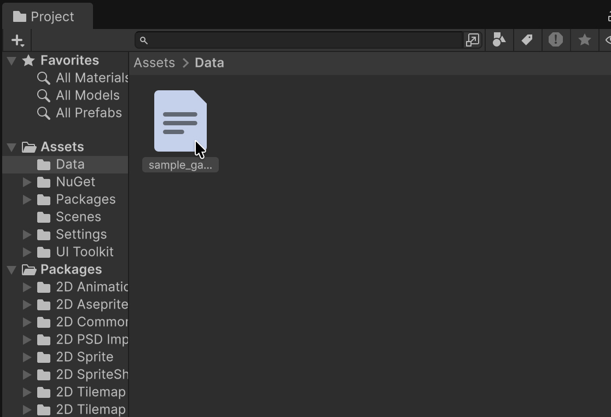
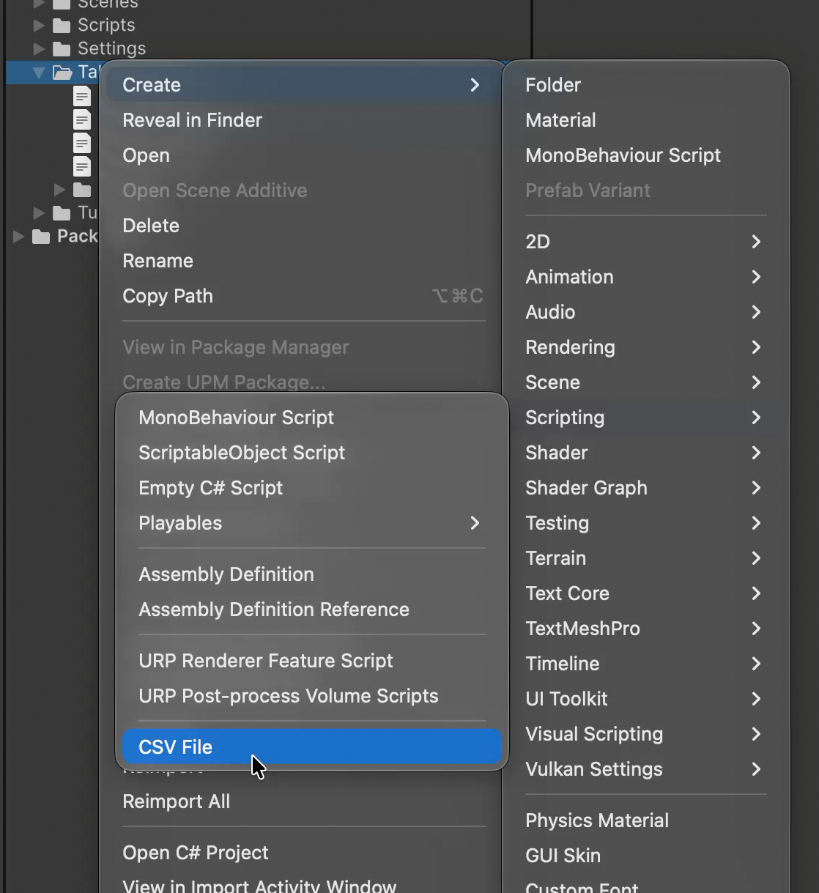

Getting started
Open a table
Double-click a .csv or .tsv asset in the Project window. To open an empty window without a file, use Window > NKStudio > Tabular Editor.

Tabular Editor opens one window per asset. Double-clicking the same file again focuses the existing window. Large files are read in the background, so the editor stays responsive while loading.
Create a new CSV file
Choose Create > Scripting > CSV File in the Project window to create an empty table and name it right away. The size (5×5 by default) and format, such as encoding and delimiter, come from New CSV File in Preferences.

Edit and save
- Click a cell to make it active.
- Type to replace the value, or press F2 or double-click to edit the existing value.
- Press Enter to commit and move down, or Tab to commit and move right. To start a new line inside the cell, press Alt+Enter (Option+Enter on macOS).
- Save with Ctrl+S on Windows/Linux or Cmd+S on macOS.
With unsaved changes, the window tab shows * and the status bar shows Unsaved. Closing the window without saving asks whether to save.

Freeze header rows
Right-click a row number on the far left of the table to open the header row menu.
- Right-click the row number of the last row you want to freeze. To freeze only the top row, right-click 1.
- Choose Set Header Rows Up to Selection. Every row from row 1 to the one you clicked becomes a header row.

Those rows stay at the top in bold while you scroll vertically. Header rows can still be selected and edited; they are only excluded from sorting. To undo it, choose Clear Header Rows from the row number context menu. The header row count is stored in the file's .meta and shared with your team through version control.
Next steps
- See Editor interface for what each area does.
- Learn rows and columns, sorting and the fill handle in Editing.
- See Keyboard shortcuts for the full list.